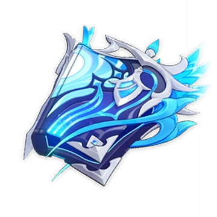

Siapa Neuvillette?
Neuvillette adalah sosok yang penyendiri. Orang Fontaine yang ingin dekat dengannya hanya akan menemui penolakan, tanpa terkecuali. Sampai hari ini pun tidak ada seorang pun yang tahu nama depannya, karena dia memang menyarankan untuk menggunakan nama belakangnya saja. Dia percaya bahwa hubungan pribadi yang dekat dapat menimbulkan kecurigaan pada keputusan yang diambilnya. Sebagai lambang keadilan absolut, hal itu tidak diperkenankan. Tentunya ada orang yang pantang menyerah. "Ayolah Monsieur Neuvillette. Tidak semua orang akan diadili, dan kamu juga tidak selalu bertindak sebagai hakim". Apakah benar demikian? Neuvillette tidak pernah mengungkapkan pandangannya soal itu.Mungkin dalam waktu yang sangat lama, tapi sungai yang mengalir lambat laun akan mengikis tepiannya. Semua orang Fontaine akan bersalah, penghakiman dan penghukuman akan menanti semua tanpa terkecuali. Demikianlah faktanya. Tapi Neuvillette tidak pernah mengatakan hal ini kepada siapa pun. Dialah penyendiri sejati.
Weapon
Tome of The Enternal Flow
Meningkatkan HP 16%/20%/24%/28%/32%. Saat HP meningkat atau berkurang. DMG Charged Attack meningkat 14%/18%/22%/26%/30%. Efek ini berlangsung selama 4 detik, dapat ditumpuk sampai 3 lapis, dan dapat terpicu sekali setiap 0,3 detik. Saat memiliki 3 lapis atau saat durasi lapisan ke-3 diperbarui, akan memulihkan 8/9/10/11/12 poin Energy. Pemulihan Energy yang dapat diperoleh dengan cara ini dapat terpicu sekali setiap 12 detik.
Normal Attack: As Water Seeks Equilibrium

Mengayunkan tongkat dengan ringan dan memerintahkan ombak untuk melancarkan maksimum 3 serangan berturut-turut dan mengakibatkan Hydro DMG.
Skill : O Tears, I Shall Repay

Memanggil Raging Waterfall yang mengakibatkan Hydro DMG Area berdasarkan Max HP Neuvillate terhadap musuh yang berada di depan. Setelah mengenai musuh, akan menciptakan 3 Sourcewater Droplet di sekitar musuh.
Ultimate: O Tides, I Have Returned

Melancarkan gelombang ganas yang mengakibatkan Hydro DMG Area berdasarkan Max HP Neuvillette. Setelah jeda singkat, 2 Waterfall akan turun di sekitar dan mengakibatkan Hydro DMG dengan radius area yang relatif kecil dan menciptakan 6 Sourcewater Droplet di dalam area di hadapan Neuvillette.